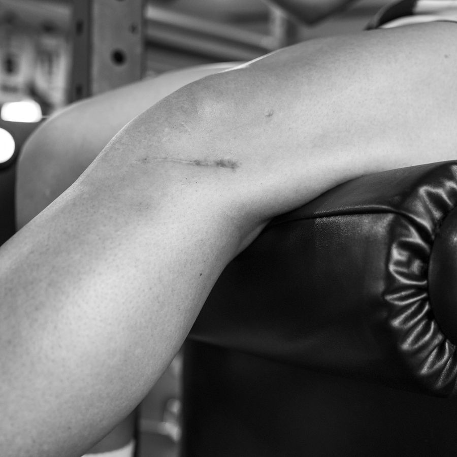
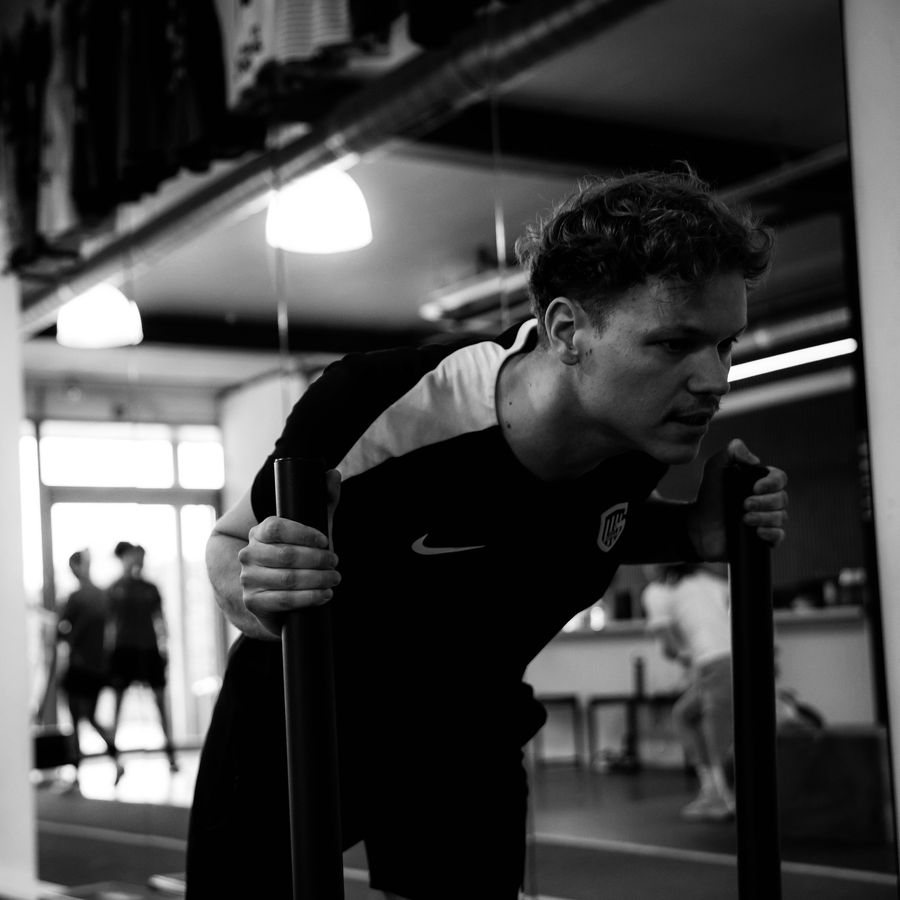

Credo Rehab & Performance : kinésithérapie, revalidation et entraînement de performance à Diepenbeek

Revenez plus fort. Douleur, blessure ou opération récente ? Nous vous ramenons plus fort qu’avant, avec une approche sur mesure. Vers revalidation

ancien niveau. Développez votre condition physique ou vos capacités athlétiques, avec un accompagnement adapté. Vers performance
Kapelstraat 89 · 3590 Diepenbeek